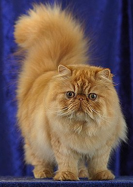

Информация о кошке:
Экзоты внешне схожи с кошками персидской породы. Экзот — коренастая крепкая и, в то же время, компактная кошка с большой круглой головой, большими круглыми выразительными глазами, выраженными щечками, направленными вперёд небольшими ушами и коротким курносым носом с ярко выраженным стопом. Окрас у экзотов может быть самым разнообразным: от белого до сине-черного. Встречаются как однотонные расцветки, так и биколоры, часто можно встретить даже трехцветные окрасы: красный табби, мраморный, черепаховый и т.д.

Информация о кошке:
Персидские кошки не могут жить вне дома.
В целом кошки этой породы довольно своенравны и упрямы. При этом они довольно уравновешены. Они не склонны к активной агрессии, и хотя могут за себя постоять, чаще просто избегают контактов с теми, кто им не нравится. Иногда могут мстить.
В семье часто выбирают хозяина, которого любят и уважают. Но точно так же многие окружающие могут попасть в «список» тех, кого они предпочтут избегать.
Информация о кошке:
короткошёрстные кошки. Как правило, это сильные и крепкие кошки. Бывают от средних до крупных размеров. Согласно легенде, являются потомками Чеширского кота.
Плюсы: Не требует много внимания, может подолгу оставаться одна, отлично подойдет для людей, много времени проводящих на работе. Имеет хороший иммунитет.
Минусы: Имеет собственное мнение по многим поводам — необходимо воспитывать с раннего детства. Могут легко простудиться на сквозняке.
Длительность жизни: Представители данной породы являются долгожителями, обычно доживают до 20 лет.
Информация о кошке:
Иногда называют таксами. Но внешним видом странности не ограничиваются. Тогда как обычные кошки, чтобы осмотреться, встают на задние лапки, манчкин садится на седалище и крепко упирается хвостом. В таком положении кошки могут находиться в течение довольно продолжительного времени, а свисающие по бокам короткие передние лапки придают сходство с кенгуру и корги.
Информация о кошке:
Возникшая на острове Мэн. Отличительной особенностью мэнских кошек обычно считается отсутствие хвоста, хотя в действительности не все представители этой породы бесхвосты. У хвостатых мэнских кошек длина хвоста может варьироваться от короткого «обрубка» до хвоста практически нормальной длины. Отсутствие хвоста является результатом естественной мутации (эффект основателя). Порода короткошёрстная: полудлинношёрстная разновидность называется кимрийской кошкой.
Информация о кошке:
Канадские сфинксы — одна из нескольких бесшерстных пород кошек. В нынешний момент это полностью сформированная и достаточно стабильная порода с 50-летним стажем, передающая свои признаки по рецессивному типу. Порода признана всеми международными фелинологическими организациями.
Другие лысые кошки — донской сфинкс, петерболд, украинский левкой — относительно молоды (около 20-30 лет) и находятся на пути становления.
Информация о кошке:
Bыведенная в Ростове-на-Дону. Имеется стандарт DSP по классификации FIFe, DSX по классификации WCF. Кошку отличает мускулистое тело, лишённое шерсти, шелковистая и горячая на ощупь кожа, высокие, стройные лапы с длинными и тонкими пальцами, длинный хвост, выразительная морда, большие уши, крупные миндалевидные или чуть раскосые глаза. Отличаются большой привязанностью к людям при полном отсутствии агрессии. Ласковы, не злопамятны, игривы, но не навязчивы, достаточно тактичны и выдержаны.
Информация о кошке:
Питерболды выглядят очень элегантно, они стройные и имеют характерную форму головы: длинную и узкую, с прямым профилем, миндалевидными глазами и большими, разведёнными в стороны ушами. Идеальные представители породы выглядят, как бесшёрстные ориентальные кошки.
Информация о кошке:
Украинский левкой относится к среднему типу, близкому к лёгкому. Левкои грациозные, длинноногие и гибкие.
Особенности внешнего вида породы: голова более плоская и угловатая, тело вытянутое, грудная клетка овальная, излишняя складчатость кожи, но не такая обильная, как у дончаков.
В левкоях заложены крови дончаков облегченного и удлиненного формата, ориенталов (через петерболдов).
Для получения вислоухости единожды влита кровь шотландской вислоухой кошки, но опосредованно, через непородного сына — метиса от породистого фолда, а от нестандартного, длинного и длиннолапого, более длинноголового вислоухого беспородного кота. Коты украинских левкоев крупнее кошек — хорошо выражен половой диморфизм.
Информация о кошке:
В настоящее время внешний вид тайской кошки практически полностью совпадает с описаниями сиамов XVIII—XIX веков. Это компактные, довольно мускулистые животные, на средних элегантных лапах. Основные черты кошек тайской породы — это голубые глаза формы лимона или миндаля, очень короткая шерсть и уникальное сочетание округлой формы головы с отчетливым умеренно-клиновидным подбородком. Характеризующий породу окрас — колор-пойнт, то есть окрашенные конечности, хвост и «маска» на мордочке при светлом корпусе (чисто белом у молодых животных, цвета слоновой кости и темнее вплоть до каштанового у кошек постарше). Данный тип окраса является одним из видов альбинизма с неполным пропаданием пигмента (акромеланизм). Можно заметить, что тёмными являются части тела, удалённые от основной массы тела, то есть сильнее охлаждаемые. В частности, эту особенность используют при подготовке тайских кошек к выставкам — помещая их в более теплое помещение, либо надевая специальную одежду[4].